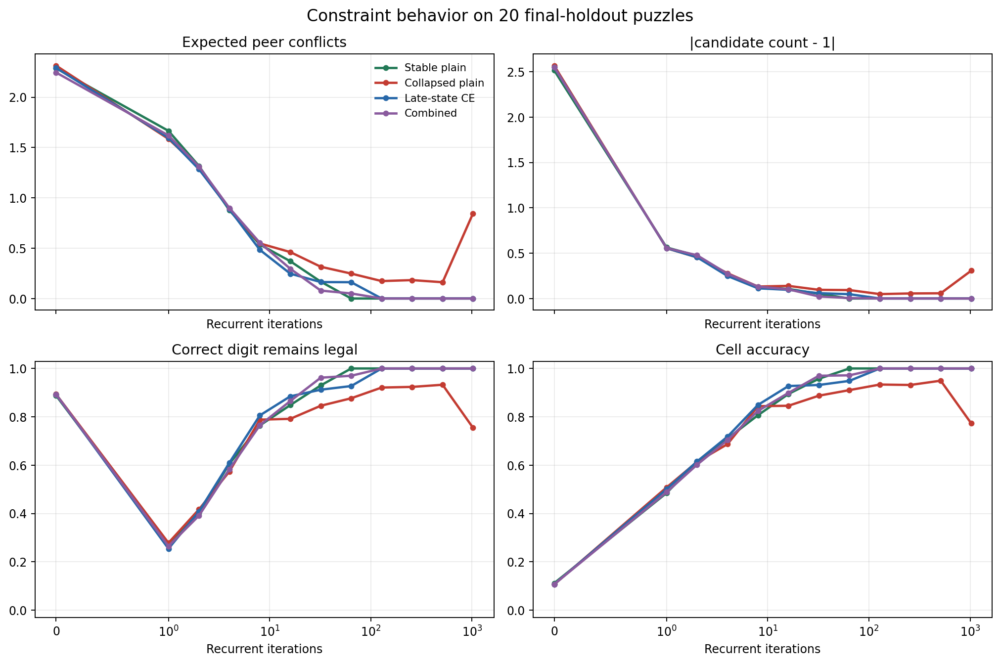
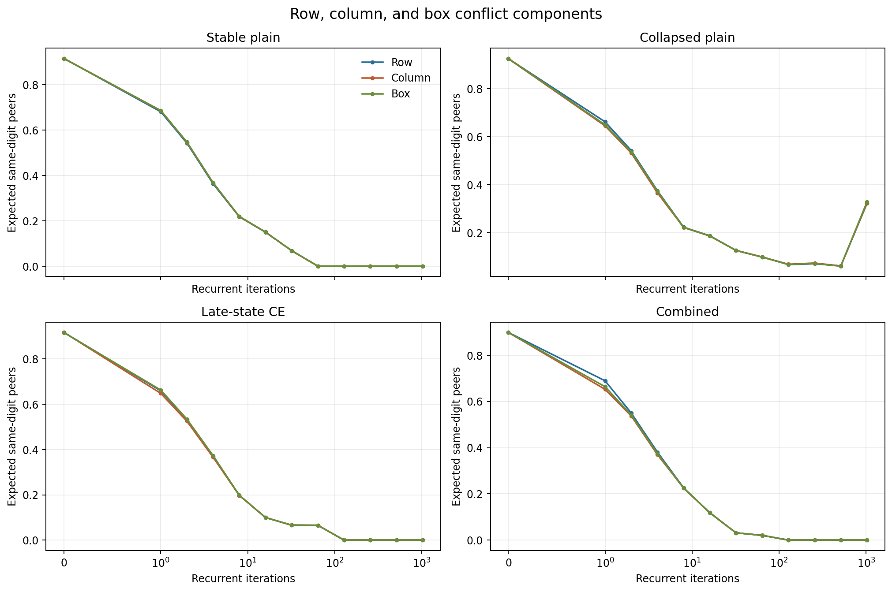
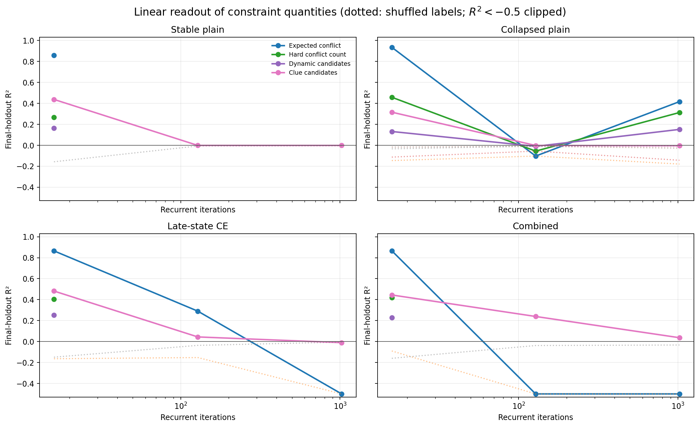
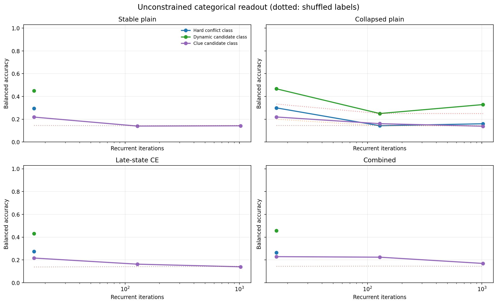
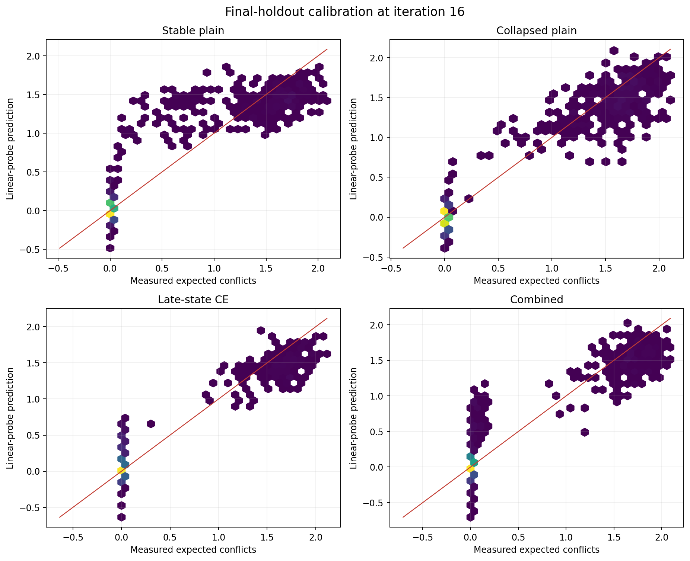
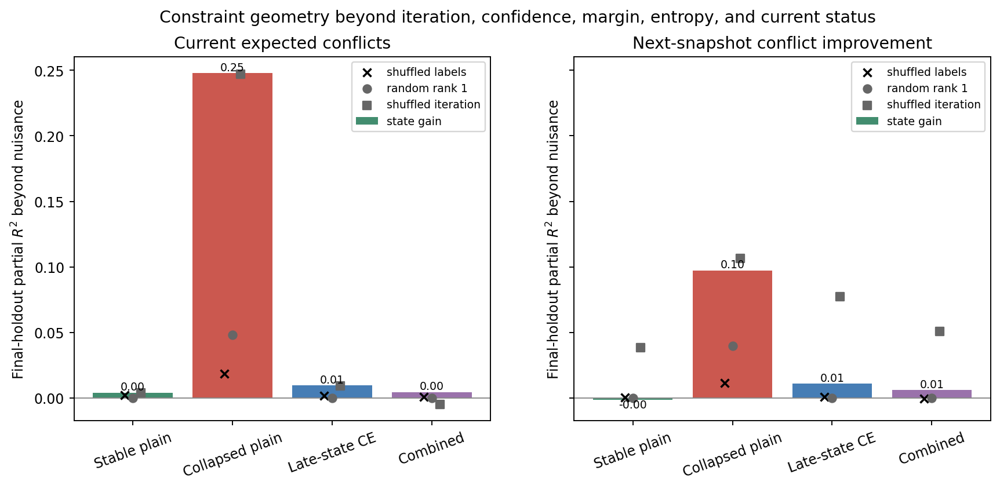
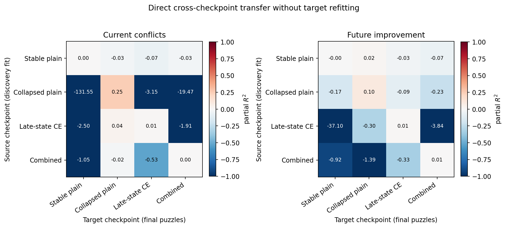

Sotaku Sudoku-constraint geometry
Projections are fit on 20 discovery puzzles, selected on 20 validation puzzles, and reported on 20 final-holdout puzzles. Dotted probe lines are shuffled-label controls.
| Model | Iteration | Expected conflicts | |Candidates - 1| | Correct digit legal | Cell accuracy |
|---|
| Stable plain | 16 | 0.370 | 0.105 | 0.848 | 0.895 |
| Stable plain | 128 | 0.000 | 0.000 | 1.000 | 1.000 |
| Stable plain | 1024 | 0.000 | 0.000 | 1.000 | 1.000 |
| Collapsed plain | 16 | 0.462 | 0.139 | 0.792 | 0.846 |
| Collapsed plain | 128 | 0.173 | 0.049 | 0.921 | 0.934 |
| Collapsed plain | 1024 | 0.846 | 0.307 | 0.754 | 0.773 |
| Late-state CE | 16 | 0.247 | 0.096 | 0.885 | 0.927 |
| Late-state CE | 128 | 0.000 | 0.000 | 1.000 | 1.000 |
| Late-state CE | 1024 | 0.000 | 0.000 | 1.000 | 1.000 |
| Combined | 16 | 0.296 | 0.101 | 0.865 | 0.899 |
| Combined | 128 | 0.000 | 0.000 | 1.000 | 1.000 |
| Combined | 1024 | 0.000 | 0.000 | 1.000 | 1.000 |
constraint_dynamics.png

constraint_components.png

numeric_probe_transfer.png

categorical_probe_transfer.png

probe_calibration_16.png

future_improvement_prediction.png

cross_checkpoint_transfer.png
